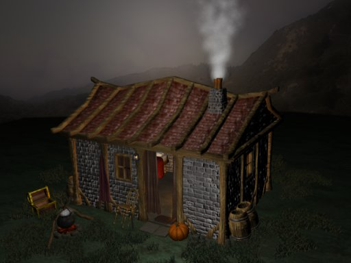

")
Issue 24 - Guthix Ponders

Topics of particular interest to the floating skull this time include his meeting with the hero Arrav, how the ring of wealth works exactly, and a shocking display of anti-dwarfish.
Salutations once more faithful observers of the balance, for Guthix treads once more upon the land to bring responses to thy pleas.
My praises extend to all herblorists for their recent discoverys in the usage of herbs, and in this spirit of good humour I hath returned to see which issues press hardest upon mine followers. As always I hath more queries to answer than I hath time to spend in mine responses, yet thou may read on to see what the most important issues to mine followers have been this time...
Guthix,
I am a firm believer in your ways and philosophy, but recently I have discovered several flaws in your faith. If you could clear this up it would benefit me greatly and enable me to believe in you more securely.
1) You say that you are the God of balance. Surely, if somebody believes in you only, then they are being unbalanced? Surely if they believe in you they do not properly consider the ways of other Gods, and of other ways of life? Surely in this case it is a paradox for anybody to believe in you? And surely people have to believe in you, otherwise as they say a God cannot exist without any followers? And if people do believe in you in this false way, then are you a false God?
2) Also, you say balance is between good and evil. If you think about it though, balance is actually good, and unbalance is bad. In that case, you are good, which would totally make all your philosophies meaningless? What do you have to say about this?
I know that mine role is difficult to comprehend from a merely mortal perspective, for universal truths oft require more universal understanding, but I shall try and simplify mine role so that thou mayst consider it more fully.
1) Those that subscribe to mine ideology do not deny the existence, power, nor the role of the other deities upon this land; they see that all are necessary to fulfill the required roles, and in their own way also serve the cause of balance.
Mine power is based upon the movements of the planets, the balance of life and death and the wisdom of nature. I hath no need for followers, yet appreciate those who search for truth in mine actions.
2) Balance is neither good nor bad, it is simply balance. Should thou have no money, and thine enemy have plenty, then from thy perspective if thy banks were then balanced, it would then be a good thing, for thou wouldst have gained far more than thou originally posessed.
From thine eneimeies perspective, this balance wouldst be evil, for their riches would have been halved in but a stroke.
Even shouldst thou believe that there are such universal constants as true good, or true evil, thou must realise that these facets of consciousness are defined by their opposite; without good, thou wouldst not know what evil is, and without the darkness thou wouldst not appreciate the light.
All things hath a place, yet no one thing should overpower any other; this is the way of balance.
Dear Spiritual and mysterious, yet serious god of balance which i am not really familiar with yet, Guthix
I have several questions for thee and in able for thee to respond, thee must think carefully...
1. If there are three gods, then how does thy brother, Saradomin, has his own island, meaning Entrana, that is being inhabited by locals that only adore thy brethren, Saradomin? Don't you think that thou and thy other brethren, Zamorak, shall also have ye own island which shelters people that worship both thee and thy brother?
2. Do thee have any plans on this place you call "Gielenor"?
3. If we haven't discovered all of our planet, don't you think there is a place not located on any terrain here in "Gielenor"? Perhaps, something unimaginably mysterious beneath the seas, which we see almost everywhere we go.
4. Which city do thee think is most superior to the others?
5. I am not sure if thee has seen it all, but was there any other creatures that inhabited this place before that are now extinct?
That is all for now. I hope thee could answer my queries...
Darkmon12
1) There are not only three gods upon this world. I know not why, but this is a lie spread by one of mine brothers for his own secret purpose.
As for Entrana, it is my understanding that this island was the place where Saradomin didst first step forth upon this world, and as such hath been honoured by his followers more than other such locations.
If thou hath truly looked upon this place however, thou will know that although it carries the veneer of Saradominism, at it's heart and under it's skin it hath still the touch of Zamorak below its' earth. There doth not exist a place in the mortal realm wholly aligned with one deity or the other, for this would disrupt the balance and I shall not allow that to occur.
2) I hath many plans for this world, for it is crucial in mine experiments.
Some day thou may see what mine purpose is, but for now, I shall keep it secret to all for fear that knowledge of my intentions may change the observations which I must make in mine experiment.
3) If thou art asking of the city beneath the waves, it hath been submerged for many centuries, and most commonfolk consider it naught but a myth.
I tell thee true, however, that such a place doth indeed exist, and even as I write this there are those working to re-establish access between this place and the outside world that hath all but forgotten it over these past centuries.
4) Mine senses oft draw me to Taverley, for it hath a tranquil beauty in the way it absorbed nature as part of itself, rather than forcing the natural world out of it as other cities such as Falador hath done.

5) There are many creatures that once walked upon this land that have since been destroyed as a race upon this plane completely.
Those called in as warriors by the various deities of this world in the so called 'god wars' thou shouldst be particularly glad are no longer walking within this realm, for such abominations brought forth by Zamorak as he waged his war should not be seen on this plane ever again.
I hope mine responses hath been satisfactory and as clear as the questions themselves.
To He Who is the Balance,
I have no God of choice, but I have wondered upon one thing about yourself, and even though I, a simple mortal, cannot answer my question, I am sure you can answer mine question. It is said that Sardomin is the 'Good God,' and Zamorak the 'God of Evil.' Why, with all due respect, are you necessary? Do not Black and White make Gray? Day and Night the Balance of Twilight? Wouldn't Sardomin and Zamorak eventually even out?
The Follower of Truth,
Kinroan
I act as final arbiter upon this land, for none else will serve this role.
When I slumbered and Zamorak and Saradomin hadst free reign upon this world, this world was almost destroyed for each of them hath their own beliefs and desires on how this world should be, but are both so inflexible that they canst not allow compromise between their beliefs, nor resist action where possible to impose their will upon this land. Should either of them ever gain enough power to exceed their opponent, then I am here to act as the agent of balance through either a reduction in ones power, or the elevation of the other.
Despite what thou mayst believe, balance doth not occur by itself; it requires both time and effort of consideration to force it upon things.
ello guthix
i am not sure who to ask this question so i will ask you is it true that there will be a book that you hold in your shield spot that helps your prayer just like some robes

Such ancient artifacts do exist, but hath been lost for many centuries.
I believe there are a few denizens of Gielinor who hath copies of such prayer books still, albeit mauled and damaged through the many ages. Like most ancient artifacts still in existence upon this land, they hath a habit of returning into circulation when they are most fully needed...
Dear oh Stupid one,
How doth you be so dumb as to fall to the matter of pondering that the entire dwarven race is all about magic and fire? If you hath ever played the awesome game known by "Dungeons & Dragons", and other such games and read such books, you would eventually find that dwarves, in actuality, HATE fire and really don't take very kindly to light. Really, if you have done what I hath mentioned before, you would know that they actually have infra-red night vision, for tunnuls are normally dark. As for the issue of magic in the dwarven race, they mostly just dig, mine, and smith. . . and drink. They really hath no need for magic. SOME choose the path of a mage, but most of them just, as I hath said above, drink and fight. . . using battle axes. . . when they can. So in closing, Zamorak rules.
Strength through power,
Xrmud
. . . Saradomin and Guthix stink by the way. . . literally. . . like manuer. . .
I confess that I hath not played this game that thou speak of, nor read the books thou claim expertise on.
I have however actually spoken to dwarves, and they tell me that thou art but some stupid human attempting to hide thy prejudices against their noble race by claiming some kind of expertise upon them that they are fit for naught but digging, drinking and fighting.
In fact, the dwarf I spoke to of thine beliefs seemed deeply insulted that their whole race shouldst be presented by thee as naught but degenerates incapable of art, or music, or poetry, or the other standards by which a civilisation be recognised.
Glory unto thee Guthix, and peace be unto you,
I have come to ask a question about your, er, "brothers", Saradomin and Zamorak. In theory, are not the two similar, almost exact, entities. They both follow what they think is right. Saradomin is only considered "good" because his ideas appeal more to the people of RuneScape. Because Zamorak's ideas are less accepted, or even because they are less understood, he is called the God of "evil". Perhaps Zamorak can see farther than Saradomin and has seen how his ways will eventually help more than Saradomin's will. I think Zamorak has been taken as the "bad guy" here. Judging somebody, er, someGod, without knowing the end result is foolish. I believe a great mage once said, "Not even the wise can see all ends". Or maybe Zamorak truly is evil, his motives are death and destruction, he's the real bad guy, and I'm just a blind fool.
Basically, is Zamorak pure evil and Saradomin pure good, or are they both just following what they think will be best for the people?
Using the Tab key,
Psychotic Bob
Zamorak is both a force for, and an embodiment of, chaos.
Saradomin is both a force for and a representative of order.
I consider neither of them to be intrinsically 'evil' nor 'good', for to make such a judgement requires a perspective skewed towards either order or chaos being the natural state of being for life, and the unnatural state to therefore be 'evil'.
Both are needed for life to thrive for neither desolation nor vacuum art states that nature responds to.
Guthix,
I've been wandering around Geilenor for several years now, working to improve whatever skill my schizophrenic desires dictate. In this time, I have chosen never to "worship" any of the gods, Saradomin seeming false and Zamorak being evil. And to worship you would be to deny your will, because to be a follower of Guthix is to want balance and a balance between worship and disbelief is to acknowledge that you exist. But I began thinking today: balance comes in twos. Saradomin and Zamorak, black and white, good and bad. All of these are balalanced. But you are not. You are the god of balance, but for your effects on the RuneScape world to be balanced, there must also be a god that tries to destroy what you have created. This is certainly not Saradomin and Zamorak; both have expressed that they would never betray your will for fear of your power. So what is it that balances the the balance itself?
-Nyrtrom
Entropy is the natural order of things; balance is but a brief, fleeting moment of clarity that can be found rarely, yet struggled for always. Every new life that enters this land disrupts any natural balance that existed, just as every death does likewise. I need no counter for balance, for it is the nature of all life to survive and flourish at the expense of other life, and it is my duty to always restore the scales as they sway back and forth by every action taken by every being on this land.
Ok, so every time I see the new “answer to letters” appear I find myself sifting through senseless questions with no substantial means of furthering the game. I miss the letters that gave hints of things to come and of potential secrets to be discovered. Personally, I would find it refreshing if you (Guthix) had the inclination towards nostalgia and give something of that which is to come. I love the Pavlovian sensations that inhabit my being that come with mystical tidbits of the unknown.
Runescaper for Life – Pk Black Ice

Thou ask for revelations of the future, but thou ask not for the correct context to place them within...
A little knowledge is a dangerous thing to possess, for it leads only to idle speculation and misunderstandings, and without knowledge of circumstance, mine answer will give thee knowledge less than that gained by searching for thine own signs and portents of the future.
Since thou hath asked directly for a glimpse of thy future however, I shall tell thee of the re-established land routes to the town of Rellekka, the game played by adventurers known as RuneLink, the dangerous sea passages to the isle of Miscellania, and the ruse of Eadgar.
As thou may now see clearly, an answer hath not the importance of a correctly worded question, for this knowledge shall only be of use to thee in hindsight.
i write to you guthix concerning a passage in the story of the legendary figure arrav, in the library of Varrock.
i quote:
"Arrav had not travelled far West, when he came upon a strange house, surrounded by mist. Wondering what kind of being would abide in such a place, yet being unafraid, he entered the house to meet three men inside sitting arguing at a table. The argument was a passionate one, and they took no notice of Arrav as he entered their house. The language they spoke was strange and unfamiliar, yet somehow he could understand what they were arguing about, and it seemed to be about the ownership of the house they were standing in. The argument did not seem to make much sense to him, but the first man was apparently complaining how the others had crept in while he was asleep, and that they had stolen the house he had made for himself.
Arrav wondered what the man meant by the others, but noticed a number of smaller figures, almost too small to notice, huddled around the shadows of the table chittering to each other almost below his hearing. The noises and speech of the place concerned Arrav, and he decided to continue on his way leaving this strange house behind him, for the things he had seen did trouble him greatly. Arrav headed West again, with the sounds of argument continuing behind him until he could hear them no longer. "
After reading this passage, during an interest in reading the story of arrav, i came up with a theory, that arrav had came across you, and your two brother's, zamorak and saradomin, in despute over ownership of runescape, the world.
i was wondering if this is truth, since being one of the god's present at this event which arrav descovered, you would know.
yours faithfully, your follower,
Arinil
I was unaware of this record of such an encounter, and yet I do not think that thou art completely wrong.
There are many places within this realm where the boundaries between the various dimensions are weakened, and should this Arrav have come across such a place where the realm of the gods and that of man didst cross, then he may hath interpreted such an event in ways that his mind could cope with, for to see many of the gods in their true forms, in their own abode, wouldst most likely drive any normal man insane.
I know not who this Arrav is, but if he should have survived such an encounter with his mind intact, he must truly have been a man of exceptionally strong willpower, and presence of mind.
hello, i was wondering 2 things
1. how much of a chance does wearing a dragon ring increase
2. how long until the new updates are coming out...monsters..quest...new land areas.
THANKS,
Couch111
I see that many people in this world hath conflicting and contrary ideas as to how the ring of wealth may help them.
Allow me to set this straight once and for all.
1) If thou consider the possessions of an enemy to be like a roulette wheel, then the 'rare' items so coveted by players are located on a second roulette wheel, that will only be spun shouldst thou roll a specific number on the first wheel.
The ring of wealth affects not the number which thou may achieve upon the first wheel, but should thou gain the precise number to allow thee access to the second, the ring will make thy chances of gaining an object on that second roulette wheel all the greater.
My analogy is flawed, for death is not like roulette, but I hope that thou see the truth within this.
2) Life hath no schedule to follow, for it is an ever evolving process, and the nature of balance decrees that things occur when they must occur.
However, all events hath their patterns, and by scrutinising that which hath occurred before thou may see the patterns that run through things, and mayhaps predict when new events might be brought about upon this world...
And so I must return to mine slumber once more.
Planets may spin in the heavens, in sweeping arcs, life may begin and end, civilisations rise and fall and continents clash and seperate, but I as ever remain Guthix.
May you walk in the balance, until next we meet, I leave you with my universal truth;
Balance Is Power-
Guthix
DISCLAIMER: The views of Guthix do not reflect the views of Jagex Ltd or it's employees. We tried to prevent him giving away our secrets, but he is a god.

More articles in
God letters
|
|